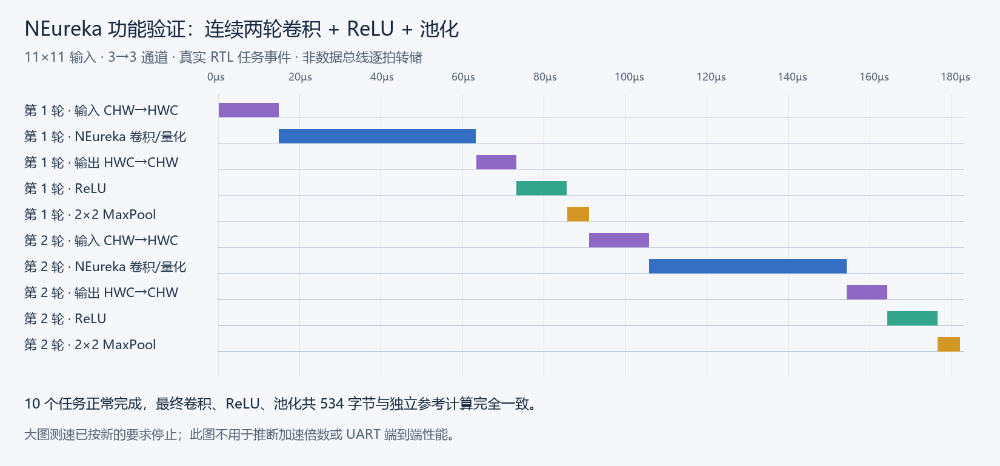
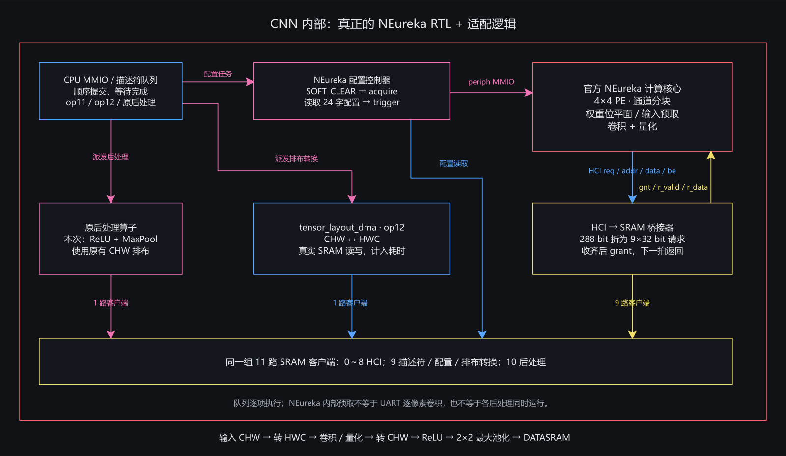
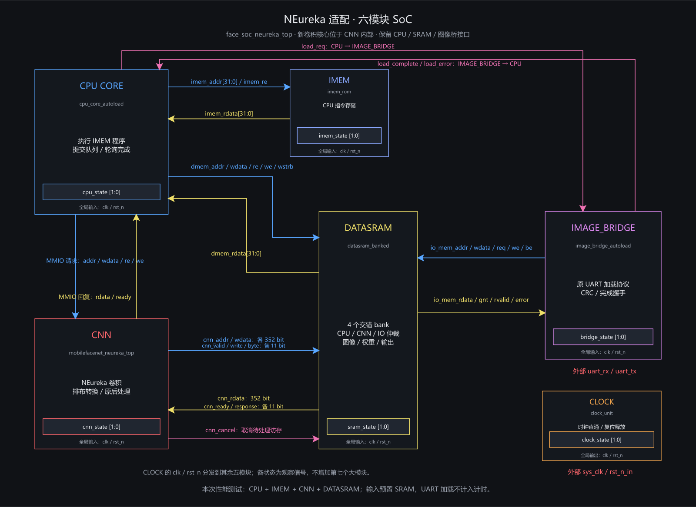

已完成核心接入与小图功能验证；不提供具体加速倍数。大图完整验证尚未完成。



# NEureka 适配与功能验证 已经接入官方 NEureka RTL。按最新要求，本次不提供具体加速倍数；耗时的大图性能仿真已停止，大图完整正确性尚未完成验证。 ## 改了哪里 新入口是 `rtl/neureka/face_soc_neureka_top.sv`，编译清单为 `rtl/filelists/system_neureka.f`。原通用 CNN、原 SoC 和固定 Sobel 流式入口继续保留。顶层仍为 CPU、CNN、DATASRAM、IMEM、CLOCK、IMAGE_BRIDGE 六个大模块。 CNN 内部接入真正的 NEureka 4×4 PE 核心，新增配置控制器、288 bit HCI 到原四 bank SRAM 的桥接、CHW/HWC 排布转换 DMA。ReLU 和池化继续使用原算子。CPU 仍通过原 MMIO 提交任务队列： `输入 CHW → 转 HWC → NEureka 卷积/量化 → 转 CHW → ReLU → 2×2 最大池化 → DATASRAM` 输入排布转换、卷积和后处理都是硬件执行；Python 只准备输入、配置、权重和独立参考值。 ## 已经验证 | 检查 | 结果 | |---|---| | 最终 RTL：11×11、3→3 通道，连续两轮 | 10 个任务全部完成；最终卷积、ReLU、池化共 534 字节全部匹配；两轮卷积耗时相同 | | 存储桥接 | 17 次事务通过，覆盖部分字节写、零写掩码、bank 争用和 HCI grant 后一拍回复 | | 六模块完整顶层 | Verilator 展开及连线检查通过；保留上游/历史 RTL 的警告，不表示零警告 | | 最终文件一致性 | 当前 `rtl/neureka/*.sv` 的 SHA-256 与通过功能验证的编译记录一致 | 连续任务测试复用同一组输出缓冲区，逐字节比较在整批结束时执行。`verification/` 保存实际日志、事件、程序和源码哈希。完整顶层做了展开检查；本次功能仿真使用真实 CPU、IMEM、CNN 和 DATASRAM，没有运行 UART 加载闭环。 ## 怎样使用 CPU 队列接口不变。新增 op11 指向 24 个 NEureka 配置字；op12 执行 CHW↔HWC 转换；ReLU 用 op6，MaxPool 用 op8。旧卷积 op0/op1/op9 不能直接送入新入口，软件必须生成新的配置并预打包权重。示例见 `scripts/gen_neureka_benchmark.py`，详细接法见 `docs/neureka_integration.md`。 本机快速复现已通过的小图用例，可复用现有编译程序，避免重新编译整个 NEureka： ```powershell scripts/run_neureka_sim.ps1 -Size 11 -OutputChannels 3 -Repeats 2 -Cases neureka -Reuse 'build/runs/20261010_225915_neureka' ``` 首次编译或需要原始逐拍 VCD 时可不传 `-Reuse`，并按需加 `-Waves`。完整编译较慢。`scripts/run_neureka_bridge.py` 和 `scripts/lint_neureka.py` 在本机 Ubuntu-22.04 中执行。 ## 图和波形 - `neureka_architecture.drawio`：两页可编辑架构图，分别为六模块总图和 CNN 内部图。 - `soc_neureka.png`、`cnn_neureka.png`：架构预览。 - `functional_tasks.png`：已通过的连续任务阶段时间线。 - `open_functional_tasks.cmd`：在 GTKWave 中打开同一时间线，一项任务一根线，无重复轨迹。 这份 VCD 由本次已通过 RTL 仿真的 `events.csv` 生成，只表示任务派发到完成的区间，包含任务内部的等待、搬运和计算；它不是原始总线逐拍转储，也不能用于判断每拍 MAC 是否有效。两轮任务是先后执行，输入也没有来自 UART。横轴从 CPU 启动时刻起算。 ## 当前范围 本次验证的是 3×3/stride1/valid 卷积、8 bit 有符号权重、0～127 输入、右移量化、ReLU 和 2×2/stride2 最大池化。没有运行训练好的人脸网络；其他卷积模式、负输入激活及完整模型还需验证。 新入口是基于 SRAM 的可编程任务模式，尚未把此前 UART 边收图边算的逐像素路径接入 NEureka；新队列顺序执行，NEureka 内部开启预取。不能据此声称 UART 整体流程已经加速。 256×256 的输入、参考值和大图脚本已准备，原版大图通过；新版的大图运行在卷积阶段按新的范围调整停止，因此不提供大图 PASS 或前后性能结论。大图用例需要将 SRAM 设为 4 MiB，而新 SoC 入口默认仍为 256 KiB。 开源代码版本、许可证及语法兼容补丁见 `third_party/NEUREKA_SOURCES.md`。NEureka 的算术核心未替换为行为模型。